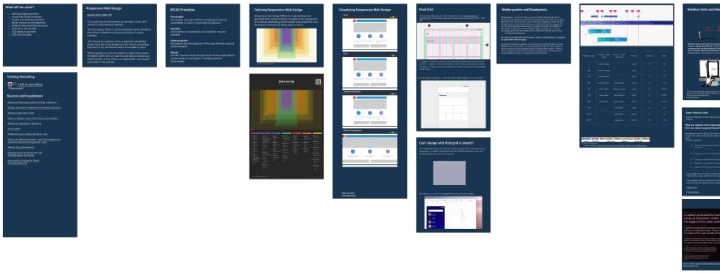

Enterprise wellness · 2021–2023
Virgin Pulse
UX Design Engineer, leading accessibility strategy for a Section 508 requirement on the Bank of America contract.
Why they hired me
Virgin Pulse hired me into the product org for a specific reason: Bank of America, one of the biggest clients, had been promised Section 508 compliance, and the product and engineering orgs were struggling to communicate. At the time, I was a designer whose background sat at the intersection of front-end engineering and accessibility, which was exactly where the problem lived. I joined the product team as their first UX Design Engineer.
Together with engineering leadership, we developed a shift-left strategy before I knew the term "shift-left" existed. Instead of treating WCAG acceptance criteria as a QA gate, we moved accessibility upstream into how features were designed, built, and reviewed, with shared standards around flexbox and grid giving engineering and QA a common vocabulary.
I partnered with leadership from engineering, QA, and product to define the architecture shift, then prototyped it with a platform engineer. That flexbox and grid proof of concept became the foundation for our accessibility standards, training, and documentation. I also built annotation tools, ran two training tracks (one for design, one for engineering), and held open office hours twice a week, so both teams developed working fluency in Reflow (1.4.10) and Resize Text (1.4.4) and caught issues before they shipped.
Four approaches to responsive layout
This was a core part of the training. Most teams were shipping the fixed example, or at best the fluid one, and calling it responsive. The fourth is the one that meets WCAG and scales.
Pixel-set widths. Breaks at zoom. Overflows narrow viewports.
Scales continuously. Typography breaks at extremes (lines too long, then too short).
Jumps at preset breakpoints. Stable between them, but content can overflow or clip at the transitions.
Fluid within bands. Reflows at thresholds. Predictably designed to meet WCAG Resize/Reflow at all zoom levels.
What I did
- Co-authored Virgin Pulse's WCAG AA strategy to meet the Section 508 requirement on the Bank of America contract, defining accessible patterns and component standards adopted across the organization.
- Led a proof of concept refactoring Angular micro-frontend templates and CSS to meet Reflow (1.4.10) and Resize Text (1.4.4). The approach became the engineering SOP for 300+ engineers.
- Designed and delivered two accessibility curricula, one for engineers and one for designers and product leads, built on relative units, fluid grids, and container-guided layout.
Result
The Section 508 requirement on the contract was met. More than 400 engineers, designers and PMs went through the two curricula, and the flexbox and grid approach became the standard way the org built responsive, accessible front ends.

The deck covers WCAG principles, fluid grids, breakpoints as a last resort, relative units, Flexbox and Grid, and it stayed the reference for responsive, accessible front-end work in the Virgin Pulse engineering org.